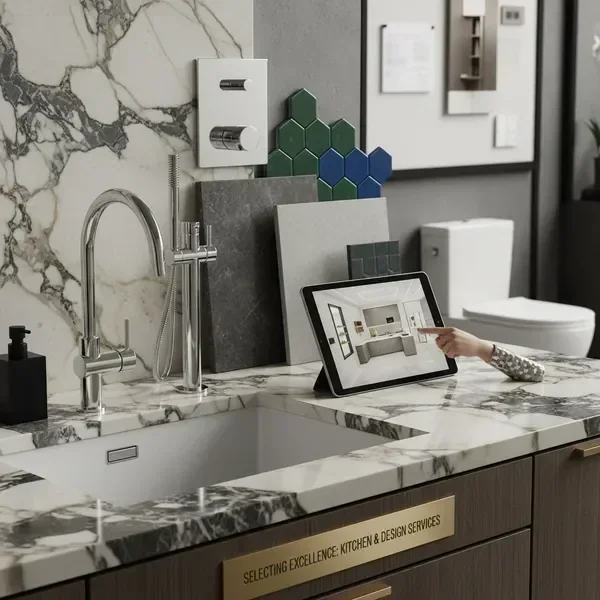
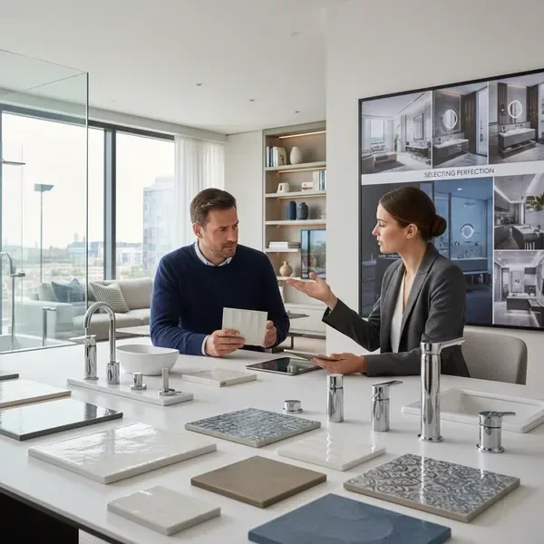

עם ניסיון של למעלה מ-25 שנים בתחום הכלים הסניטריים, הקרמיקה ועיצוב אמבטיה ומטבח, לאחר שניהלתי, הקמתי, ייעצתי ומכרתי, בחרתי להקים עסק שייתן מענה לבקשה שעלתה כמעט בכל פגישה "אולי תבואי אלי הביתה לראות, זה הכי טוב לא!?", היום אני מספקת שירות של מכירה, (ממש "חנות מהלכת") ייעוץ מקצועי ואישי אצלכם בבית. ייעוץ שחוסך לכם זמן יקר וכסף רב. במקום לבזבז שעות ארוכות בפקקים, בחנויות שונות ולהתלבט בין אינספור אפשרויות, אני מגיעה אליכם הביתה בנחת עם הידע, הניסיון והמקצועיות.
השירות שלי כולל ייעוץ מקצועי בבחירת כלים סניטריים, אריחי פורצלן וקרמיקה, מקלחונים, ריהוט לאמבטיה, ברזים ושיש למטבח - הכל מותאם אישית לצרכים שלכם, לתקציב שלכם ולסגנון העיצובי שאתם אוהבים. אני מאמינה שכל בית ראוי לעיצוב מושלם, ואני כאן כדי להפוך את החלום הזה למציאות.

מגוון רחב של כיורים, אסלות וברזים מהמותגים המובילים. אני מסייעת לכם לבחור את הכלים המושלמים שישתלבו בעיצוב האמבטיה שלכם ויספקו פונקציונליות מקסימלית.

קרמיקה איכותית במגוון עיצובים, צבעים וטקסטורות. בין אם אתם מחפשים מראה קלאסי או מודרני, עם הניסיון וההיכרות שלי את התחום ואת הנפשות הפועלות, אעזור לכם למצוא את הקרמיקה שתהפוך את החלל שלכם למרהיב.

מקלחוני זכוכית איכותיים בעיצובים מגוונים - אתאים עבורכם לחלל שלכם מקלחון.
אני עושה מאמצים לדלות מהשפע שיש לשוק להציע את הספקים נותני השירות הטובים ביותר ביחס לשוק ומנגישה לכם אותם.

ארונות אמבטיה, מראות בעיצוב עכשווי ואיכות גבוהה. מבחר עצום של סגנונות, סטנדרט והזמנות מיוחדות.

משטחי שיש איכותיים למטבח במגוון צבעים וסוגים. עמידים, יפהפיים ומוסיפים ערך למטבח שלכם. אני מסייעת בבחירה המושלמת שתתאים לעיצוב ולתקציב .

הייחודיות שלי היא בשירות האישי - אני מגיעה אליכם הביתה, מודדת את החלל, מבינה את הצרכים שלכם ומציעה פתרונות מותאמים אישית. הכל בנוחות של הבית שלכם, על קפה טוב.
רבע מאה של ניסיון מקצועי בתחום הכלים הסניטריים והקרמיקה. אנחנו מכירים את השוק, את המוצרים ואת הטרנדים העדכניים ביותר.
אין צורך לבזבז זמן בנסיעות לחנויות. אנחנו מגיעים אליכם הביתה עם כל הדגימות והקטלוגים, חוסכים לכם זמן יקר ומאמץ.
הייעוץ המקצועי שלנו מונע טעויות יקרות בבחירת המוצרים. אנחנו מכירים את השוק ויודעים איפה למצוא את המחירים הטובים ביותר.
כל לקוח הוא ייחודי, וכך גם הפתרונות שאנחנו מציעים. אנחנו מתאימים את ההמלצות שלנו לצרכים, לתקציב ולסגנון האישי שלכם.
צרו איתנו קשר בטלפון או דרך הטופס באתר. נקבע פגישת ייעוץ בזמן שנוח לכם, בבית שלכם.
נגיע אליכם הביתה, נמדוד את החללים, נבין את הצרכים והרצונות שלכם ונציג את האפשרויות השונות.
נכין עבורכם הצעת מחיר מפורטת עם המלצות מקצועיות למוצרים המתאימים ביותר לצרכים שלכם.
נלווה אתכם לאורך כל התהליך - מבחירת המוצרים ועד ההתקנה הסופית, עם שירות מקצועי ואמין.
אל תבזבזו עוד זמן וכסף על ניחושים. קבעו פגישת ייעוץ חינם עם המומחים שלנו ותגלו איך אפשר לעצב את הבית שלכם בצורה חכמה, יעילה וחסכונית.
צרו קשר עכשיו